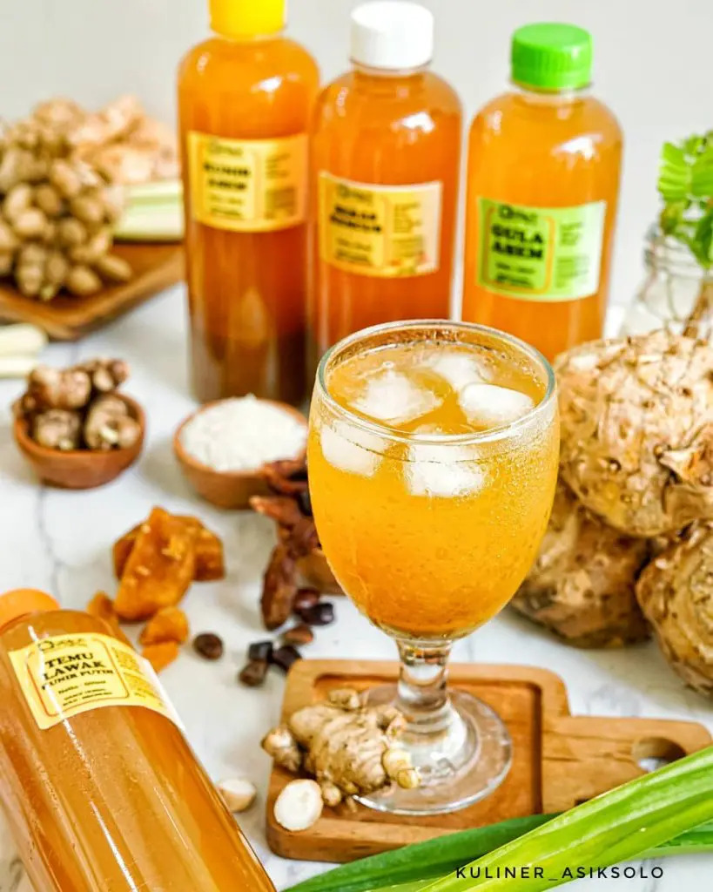

Es Siwalan
Tanaman Lontar yang banyak terdapat di daerah Gresik dan biasa disebut Siwalan
memiliki banyak manfaat. Salah satunya menjadi penghasil minuman yang disebut dengan Legen oleh Warga setempat.

Es Temulawak
Racikan herbal minuman temulawak yang banyak manfaat bagi tubuh karna di dalam racikan terdapat temulawak, cengkeh, kayu
manis dan kapulaga.

Wedang Pokak
Wedang pekak adalah minuman tradisional khas dari Kabupaten Demak, Jawa Tengah. Wedang pekak sangat cocok diminum ketika
berada di daerah dingin, atau di malam hari.
© 2024. Bening & Dian. All Rights Reserved.